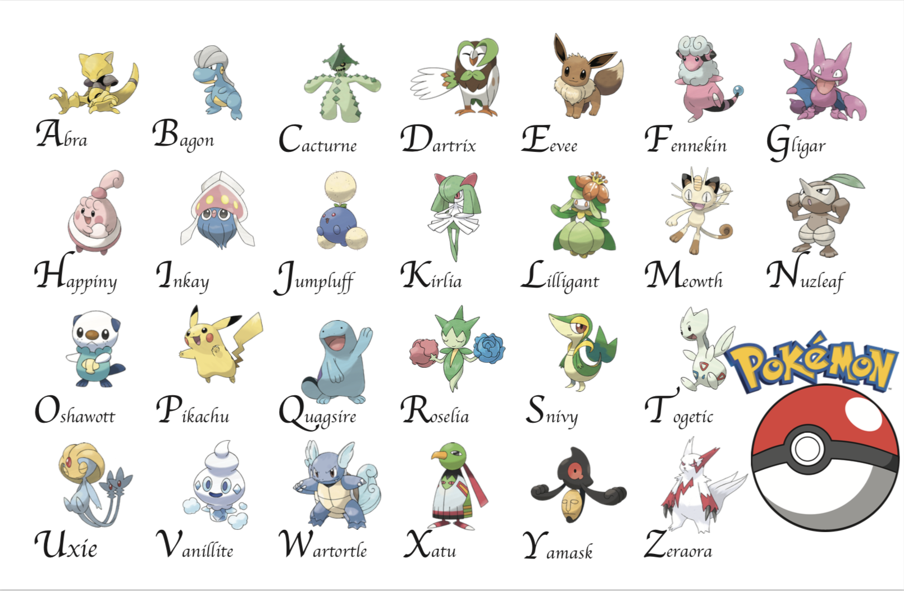

UX Projects
Prototyping: Joy Recycling phone application (individual project)
Aug 2018 -- Dec 2018
Interactive Designer
Designed an interactive system to improve user’s accessibility to recycling resource, to track where electronic waste travel to in the recycling process, and providing financial benefits
Joy Recycling simplizes the process of electronic waste recycling process. With Joy Recycling, people do not need to fill in a long form about their product information, but simply take a photo and the system will identify item for them. People do not need to carry their electronic items to a drop-off station far away from their house, they can get free door-to-door pickup service. People even could get coupons or cash as reward of participating in recycling, which keeps people motivated and enjoy doing it. Joy Recycling also provides tracking options for users, therefore, they can visualize the recycling process and trust in the recycling process.
Initially, I gave to much features to the website. The original design included trade, sell, buy, and donation functions. According to my peer feedback, users felt the design was similar to ebay, which made it less attractive. Also, becasue it was designed as a social networking webstie, users mainly trade eletronic devices with skills. So it could not gaurentee the quality of skills that has been trade and would decourage people want to trade for money, which made the design of selecting a saler at certain area on the map less meaningful. As the article, “Designing Emotional Intelligence”, mentioned: communication is crucial in the design process. A sucessfully designed products are those who deliver effcient message, apply appropriate data, have self-awareness and well organization. My original design failed in user test is because it was totally built on my imagined situation with too many complicated functions. It need consider more about the user’s need, emotion, and experience. Therefore, I decided to simplized the design and went back to ideation and competitors.
Then, I started to consider if app would be better than website. Compared with the existing electronic device trade-in website where people need to click a lot to input product information, taking a photo on phone and let the system identify the product would be much easier. Additionally, my targeted users are those who complained the recycling process was too complicated. They prefered simple and easy solution, therefore, picking up phones and opening an app would be much time-saving than sitting in the front of computer and searching for the website. Therefore, I decided to redesign for a phone application instead of the website. Image recognition feature is the first feature that added into the design.
Just Futures logo and website design (individual project)
Aug 2018 -- Dec 2018
Graphic Designer
● Designed logo and high-fidelity mockup website for client
● Followed design priciples of readability, hierarchy, free space, balance, effective grid and logical alignment
Designer Statement: When thinking of immigration, the first scene come out of my mind is how they cross the ocean to land here. So the basic background color I chose is light blue, standing for the ocean. Then the organization is giving support for the group of people. So it should also have a warm feeling, then I picked the complementary color harmony.
Qualitative research: Detroit Institute of Arts (group project)
Aug 2018 -- Dec 2018
UX Researcher
● Applied methodology based on contextual inquiry and human-centered design
● Conducted semi-structured interviews, observed work processes, processed interview notes into discrete pieces of qualitative data, analyzed quallitative data using affinity walls
The problem we are trying to solve is that DIA uses multiple software for event scheduling which causes confusion and miscommunication. Two major software DIA uses are the “Website Event Submission” form and USI. The Website Event Submission form is a Microsoft Designer and InfoPath based form and workflow that collects information for events that will appear on the DIA’s website. Most works are based on this Microsoft products. USI is a event management software, where most events at the museum are entered into USI with only a small group of users with access to the software. It is generally used for creating resume of event information, arranging group tours, reserving a space for internal staff meeting. When users outside these departments require an event, they reach out to these USI users in various methods such as: emails, phone calls, and various Microsoft Word documents and templates. Other software they use includes ACME, Online Submission Form, Raiser’s edge, etc. Our goal is to find a unified solution for the internal event planning.
Our recommendation is that the IT department could take a step back and work on the big picture - slowly build on a solution that works for everyone. The IT department currently consists of 3 members - bringing in a UX element along with engineers would strengthen the team to to build their own internal system.

Pokemon Alphabet design(individual project)
Oct 2018 -- Nov 2018
Graphic Designer
1st version:
4th version: